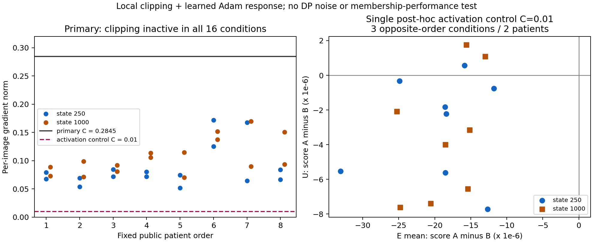

클리핑·Adam·E/U 반응의 최소 검증 결과
2026-09-15. 후보를 좁힌 근거와 전체 연구 목표를 이어 수행했다. 전체 위치는 2번의 후보 검토이며, 이번 국소 검증 완료가 논문 설계 전체의 검증 완료를 뜻하지 않는다.
결론과 의미
원래 공개 문턱값에서는 차이가 없었다. 클리핑이 작동하도록 한 단일 대조에서는 실제 의료 입력과 학습된 Adam 상태에서도 E/U의 A/B loss 순서가 달라지는 사례가 관측됐다.
- 원래 C=0.284487: 8명 × 두 상태의 16조건 모두 클리핑이 비활성이어서 A/B 업데이트·E/U loss 차이가 정확히 0이었다.
- 추가 C=0.01: 16조건 중 3조건, 서로 다른 환자로는 2명에서 E와 U의 A/B loss 순서가 반대였다. 한 환자는 두 상태 모두, 다른 환자는 1000-step 상태에서 관측됐다.
- 따라서 수학적 예시에서 제안한 조건부 현상이 실제 모델에서도 나타날 수 있다는 근거는 얻었다. 현재 운용 문턱값의 보호 효과, DP 학습의 보호 순위, 강한 MIA의 판별력이나 CVPR 기여는 입증하지 않았다.
이 결과는 다음 설계의 우선순위를 좁힌다. 추가로 점수를 튜닝하기보다 왜 논문에서 비교할 실제 보호 설정에 활성 클리핑이 생기는지, 그 설정이 유효 환자 보장·효용·비용 측면에서 왜 타당한지를 먼저 연결해야 한다. 작은 C에서 원하는 현상이 보였다는 이유만으로 그 C를 실용적인 보호 설정으로 선택해서는 안 된다. 기존 C는 다른 초기 모델 상태와 timestep 추출 조건에서 정해졌으며, 이번 t500·학습된 상태 전체의 clipping 비율을 보장하지 않는다.

전체 16조건 CSV · 분석 JSON · SVG
{kind=link}
무엇을 고정해서 비교했는가
| 항목 | 실제 실행 |
|---|---|
| 자료 | 사전에 hash로 정한 공개 개발 환자 8명, 환자당 3장. 기존 CVPR train·auxiliary·evaluation에 등장하는 모든 환자를 제외 |
| E/U 의미 | 이번 국소 업데이트에 제공한 E 2장, 제공하지 않은 같은 환자의 U 1장. 기존1000-step 학습의 membership 성능 실험과 구별 |
| 출발 모델 | 기존 비DP SD2.1 LoRA model_1의 step250·1000, 실제 adapter와 Adam moment·step·param_groups 복원 |
| 연산 A | 두 E의 gradient를 각각 C로 clip한 뒤 평균 |
| 연산 B | 두 E의 gradient를 평균한 뒤 C로 clip |
| 분기 | 모든 환자·A/B마다 동일한 원래 파라미터와 optimizer 상태로 복원. 다음 환자로 업데이트를 누적하지 않음 |
| 입력 | P256 전처리·VAE posterior mode, generic prompt, t=500, 이미지별 hash seed의 diffusion noise 한 번을 모든 분기와 상태에서 재사용 |
| 정밀도 | 원 FP16 base 가중치 값을 FP32로 승격, FP32 forward/backward·LoRA·Adam. 원래 weak-label/AMP 학습의 수치 재현은 아님 |
| 보호 범위 | DP gradient noise=0, 공개 outer 분모=1, 다른 환자 배경 기여 없음. 원형 ELS/ULS 전체 또는 DP 학습 결과가 아님 |
| 주 관측 | score_A−score_B = loss_B−loss_A. 실제 θ_A−θ_B와 query gradient의 내적을 함께 비교 |
과거 momentum 때문에 두 분기가 공통으로 바뀔 수 있으므로 baseline 대비 개선을 그대로 clipping 효과로 세지 않았다. 주 비교는 같은 출발점의 A/B 직접 차이다. 같은 환자라는 사실로 gradient의 공통 성분이나 정렬을 가정하지 않았다.
첫 실행: 후보가 발동하는 조건이 없었다
원래 C=0.28448700606156724는 기존 공개 calibration의 선정 image p80이다. 이번 두 상태에서 E gradient norm의 전체 범위는 0.0516939–0.1718270이었다. 모든 E gradient와 환자 평균 gradient가 C보다 작았다.
따라서 A=B라는 대수적 예측에 맞게 16조건 모두 실제 Adam 파라미터와 E/U loss 차이가 0이었다. Adam이 방향 차이를 지웠다는 결과가 아니다. 입력 단계부터 연산 차이가 없었다. 이 첫 실행만으로 활성 클리핑의 효과를 판단할 수는 없었다.
추가한 대조와 그 경위
첫 실행이 모두 비활성임을 확인한 뒤, 사용자에게 추가 이유·범위·예상 시간을 알리고 기존 공개 calibration grid의 최솟값 C=0.01 하나로 활성 대조를 수행했다. 이번 대조의 착수는 사후 결정이며 첫 실행의 사전 조건으로 소급하지 않는다. 여러 C를 실행해 E/U 부호가 원하는 값을 선택한 것이 아니며, 이번 작은 C의 의료 효용이나 운용 타당성이 입증된 것도 아니다.
모델·환자·gradient·prompt·noise·timestep·Adam 상태는 그대로 재사용했다. gradient 재계산이나 추가 장기 학습은 하지 않았다. 첫 결과·계약·코드는 보존하고 별도 실행 폴더에 기록했다.
아래 score는 음의 원시 denoising MSE다. 음수 차이는 B의 score가 더 크다는 뜻이고, 양수 차이는 A의 score가 더 크다는 뜻이다. score의 크기를 프라이버시 위험으로 직접 해석하지 않는다.
| 공개 fixture 환자 순서 | 모델 상태 | E 평균 score_A−score_B | U score_A−score_B | 관측 |
|---|---|---|---|---|
| 1 | 250 | −1.58836e−5 | +5.62990e−7 | E/U 순서 반대 |
| 1 | 1000 | −1.29804e−5 | +1.08935e−6 | E/U 순서 반대 |
| 2 | 1000 | −1.55999e−5 | +1.76479e−6 | E/U 순서 반대 |
| 나머지 13조건 | 두 상태 | 모두 음수 | 모두 음수 | 이번 관측의 순서 동일 |
16조건은 16명의 독립 환자가 아니다. 두 체크포인트는 같은 모델의 학습 경로에 속한다. 또한 일부 반대 부호 사례에서 A/B 모두 U loss가 baseline보다 증가했다. “A는 U를 더 학습했다” 또는 “더 위험해졌다”라고 바꾸어 표현하지 않는다.
설명한 1차 관계는 얼마나 맞았는가
실제 저장된 FP32 파라미터의 차이로 다음 값을 계산했다.
실측: score_A − score_B
예측: −gradient(query) · (theta_A − theta_B)
48개 영상×상태 관측 중 부호는 47개에서 일치했다. E 평균은 16/16, U는 15/16이었다. 모든 영상 차이를 묶은 상대 L2 오차는 약3.51%, 개별 상대오차의 중앙값은 약1.47%였다. 상대오차는 |실측−예측|/max(|실측|,|예측|)로 계산했다.
그러나 근사가 모두 정확하지는 않았다.
- 환자 순서7의 step250 U: 예측 +1.30e−8, 실측 −3.34e−7로 부호가 달랐다.
- 환자 순서3의 step1000 U: 같은 음수 부호였지만 크기 상대오차가 약52%였다.
- 처음 정한 환자 순서1의 두 상태에서 파라미터 변화량을 절반으로 줄인 대조도 저장했다. 해당 두 U의 반대 부호는 유지됐지만 이를 다른 환자·noise·학습 경로의 안정성으로 확대하지 않는다.
따라서 실제 Adam 이후 변화와 loss 반응을 연결하는 국소 설명이 대체로 유용했다고 볼 수 있다. 정확한 예측 정리, 모든 관측의 부호 보장, 또는 회전 성분만이 원인이라는 입증은 아니다. A/B의 크기·방향 차이와 Adam의 변환이 함께 들어간다.
무엇이 다음 연구에 남는가
| 질문 | 이번에 알게 된 범위 |
|---|---|
| 실제 의료 입력에서는 이 관계가 원천적으로 사라지는가? | 단일 활성 대조에서 사례가 관측돼, 지정 조건의 가능성을 확인했다. |
| 기존 실제 문턱값에서 곧바로 E/U 차이가 생기는가? | 이번 t500·두 상태·8명에서는 전혀 생기지 않았다. |
| 특정 보호 방식이 환자를 더 잘 보호하는가? | 비회원 대조·DP noise·학습 경로·공정한 공격 비교가 없어 판단하지 않았다. |
| 환자의 공통 특성이 원인인가? | 촬영 차이·이미지별 noise·일반적인 query 방향과 분리하지 않았다. |
| 새 공격법이 필요한가? | 이번 결과에서 그런 필요성은 도출되지 않는다. |
| 현재 CVPR 후보를 어떻게 좁히는가? | 활성 clipping의 실제 운용 조건과 관측 평가 사이의 연결을 검토할 조건부 후보로 유지한다. 추가 장기 학습은 자동으로 시작하지 않는다. |
가장 가까운 User Inference·FACE-AUDITOR·ELS/ULS·CDI의 점유 범위는 유지한다. U를 사용한다는 점, clipping을 한다는 점, 집합으로 점수를 합친다는 점이 새로워진 것은 아니다. 이번 결과는 그 위에서 보호 연산과 관측 조건의 상호작용을 더 검토할 자료다.
실행·검산과 기록
- 첫 실행: 166 logical image-forward /52 backward, 실행기49.137초.
- 단일 활성 대조: 114 logical image-forward /0 backward, 실행기27.847초.
- 합계: 280F/52B, 실행기 약77초. VAE24장 전처리는 첫 실행에 포함됐다. backward 내부 checkpoint 재계산의 FLOP는 logical F 횟수와 별개다.
- 국소 임시 optimizer step은 총68회이며, 장기 학습을 이어가거나 기존 checkpoint를 덮어쓰지 않았다.
- 독립 검산 PASS: 각 실행의16조건에서 저장 raw tensor의 산술·source state·별도 CPU Adam 재계산·입력 결속을 대조했다. 첫 실행16.227초, 활성 대조17.002초였다. 검산기 SHA는31f862f1…9ceac이며 검산 실행 전에 고정했다. 이 PASS는 산술·출처 검산이지 가설 또는 프라이버시 성능의 합격 판정이 아니다.
- 출처 보강: 실행 후 실제 cache hidden·checkpoint·snapshot·scheduler·C 출처를 별도27파일 해시로 대조했다. 이는 실행 전 계약이 아니라 실행 후 provenance 보강이다.
저장 산술 검산은 전체 신경망 backward를 독립 재현했다는 뜻이 아니다. FP64는 저장된 FP32 prediction의 MSE reduction과 내적 계산에 사용했다. 작은 국소 loss 차이를 low-FPR 성능이나 환자 위험의 실용적 변화량으로 환산하지 않는다.